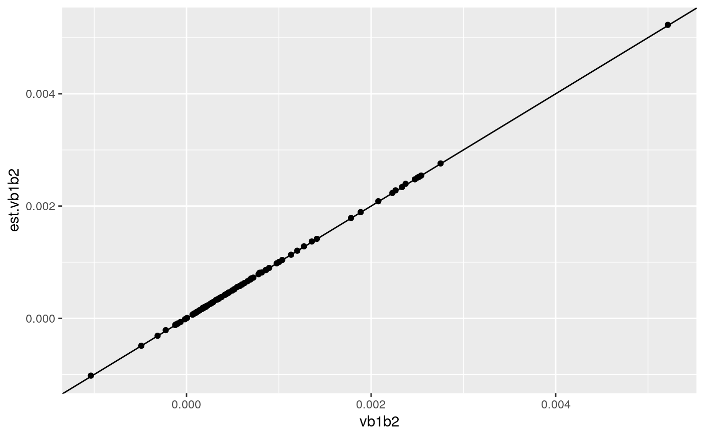
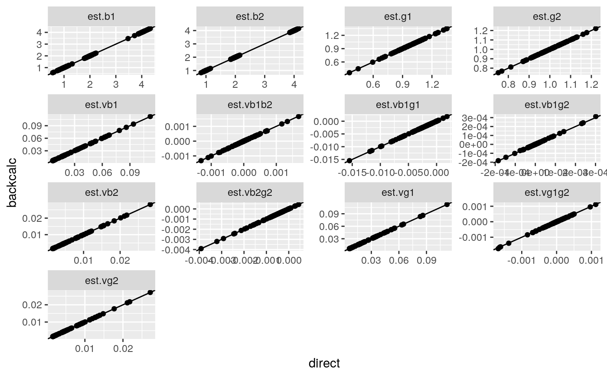

vignettes/colocqq-tests.Rmd
colocqq-tests.RmdWhen estimated regression coefficients for two quantitative traits are not independent, because they have been estimated using the same individuals, coloc.abf() is invalid, as it assumes the joint likelihood for both traits can be partitioned into the products of likelihoods for each. Unfortunately, it is also not common to provide the joint likelihood summary statistics, and would be wasteful in terms of space. But fortunately, the summary information is usually sufficient for exact reconstruction of the joint likelihood summary statistics. This vignette demonstrates that code implementing that reconstruction works, using simulated data. A user does not need to call these functions, they are called within colocqq(). load coloc
library(coloc)
library(bindata)
library(data.table)
library(magrittr)
library(ggplot2)here we only need to calculate var(b1,b2) where b1, b2 are the regression coefficients for traits 1 and 2 against the same SNP (which we will call X)
this is a function to simulate genotype data, calculate joint univariate regression directly, and calculate it via reconstruction from the single-trait univariate regression summary statistics.
simmer <- function() {
maf.1 <- sample(2:10,1)/20 # snp1
maf.2 <- sample(2:10,1)/20 # snp2
N <- sample(c(1,2,5),1)*1000
## rho <- sample(c(0,0.3),1)
rho <- 0
mrho <- matrix(c(1, rho, rho, 1), ncol = 2)
## cat(maf.1,maf.2,rho,"\n")
h1 <- rmvbin(N, margprob = c(maf.1, maf.2), bincorr = mrho)
h2 <- rmvbin(N, margprob = c(maf.1, maf.2), bincorr = mrho)
x <- h1 + h2
mu1 <- sample(c(1,2,4),1)
mu2 <- sample(c(1,2,4),1)
y1 <- rnorm(N, x[,1] * mu1 + x[,2], sd=4)
y2 <- rnorm(N, x[,1] * mu2 + x[,2], sd=2)
m <- lm(cbind(y1,y2) ~ x[,1])
m1 <- lm(y1 ~ x[,1])
m2 <- lm(y2 ~ x[,1])
## summary stats
b1 <- coef(m1)[2]
b2 <- coef(m2)[2]
vb1 <- vcov(m1)[2,2]
vb2 <- vcov(m2)[2,2]
fx <- mean(x[,1])/2
v1 <- var(y1)
v2 <- var(y2)
eta=cor(y1,y2)
res <- coloc:::qq.onesnp(b1,b2,vb1,vb2,fx,v1,v2,eta,N)*sqrt(vb1*vb2)
names(res) <- "est.vb1b2"
## names(res) <- paste0("est.",names(res))
## target <- c(b1=b1,b2=b2,vb1=vb1,vb2=vb2,vb1b2=vcov(m)[4,2])
target <- c(vb1b2=vcov(m)[4,2])
copy(do.call("data.table",
c(list(maf.1=maf.1,
maf.2=maf.2,
N=N,
eta=eta),
as.list(target),
as.list(res)
)))
}each run produces output like
simmer() ## maf.1 maf.2 N eta vb1b2 est.vb1b2
## 1: 0.45 0.3 5000 0.1455323 0.0001816654 0.0001818118we will run it lots of times, and compare output
res <- lapply(1:100,function(i) simmer()) %>% rbindlist()numerically almost identical results
cor(res[,"vb1b2"],res[,"est.vb1b2"]) # 0.984## est.vb1b2
## vb1b2 0.9999799ggplot(res,aes(x=vb1b2,y=est.vb1b2)) + geom_point() + geom_abline() 
################################################################################simmer <- function() {
maf.1 <- sample(2:10,1)/20 # snp1
maf.2 <- sample(2:10,1)/20 # snp2
N <- sample(c(1,2,5),1)*1000
## rho <- sample(c(0,0.3),1)
rho <- max(maf.1,maf.2) * sample(c(0,3,5),1)/10
mrho <- matrix(c(1, rho, rho, 1), ncol = 2)
## cat(maf.1,maf.2,rho,"\n")
h1 <- rmvbin(N, margprob = c(maf.1, maf.2), bincorr = mrho)
h2 <- rmvbin(N, margprob = c(maf.1, maf.2), bincorr = mrho)
x <- h1 + h2
mu1 <- sample(c(1,2,4),1)
mu2 <- sample(c(1,2,4),1)
y1 <- rnorm(N, x[,1] * mu1 + x[,2], sd=4)
y2 <- rnorm(N, x[,1] * mu2 + x[,2], sd=2)
m <- lm(cbind(y1,y2) ~ x[,1]+x[,2])
m11 <- lm(y1 ~ x[,1])
m21 <- lm(y2 ~ x[,1])
m12 <- lm(y1 ~ x[,2])
m22 <- lm(y2 ~ x[,2])
## summary stats
b1 <- coef(m11)[2]
b2 <- coef(m21)[2]
g1 <- coef(m12)[2]
g2 <- coef(m22)[2]
vb1 <- vcov(m11)[2,2]
vb2 <- vcov(m21)[2,2]
vg1 <- vcov(m12)[2,2]
vg2 <- vcov(m22)[2,2]
fx <- mean(x[,1])/2
fz <- mean(x[,2])/2
v1 <- var(y1)
v2 <- var(y2)
eta=cor(y1,y2)
rho=cor(x[,1],x[,2])
res <- coloc:::qq.twosnp(b1,b2,g1,g2,vb1,vb2,vg1,vg2,fx,fz,rho,v1,v2,eta,N)
names(res) <- paste0("est.",names(res))
target <- c(b1=coef(m)[2,1],
b2=coef(m)[2,2],
g1=coef(m)[3,1],
g2=coef(m)[3,2],
vb1=vcov(m)[2,2],
vb2=vcov(m)[5,5],
vg1=vcov(m)[3,3],
vg2=vcov(m)[6,6],
vb1b2=vcov(m)[2,5],
vg1g2=vcov(m)[3,6],
vb1g1=vcov(m)[2,3],
vb2g2=vcov(m)[5,6],
vb1g2=vcov(m)[2,6])
copy(do.call("data.table",
c(list(maf.1=maf.1,
maf.2=maf.2,
rho=rho,
N=N,
eta=eta),
as.list(target),
as.list(res)
)))
}
res <- lapply(1:100,function(i) simmer()) %>% rbindlist()this time there are several quantities to calculate they still correlate very well, between directly caclulated and back-calculated
cn <- grep("est",names(res),value=TRUE)
ecn <- sub("est.","",cn)
structure(diag(cor(res[,cn,with=FALSE],res[,ecn,with=FALSE])),
names=ecn)## b1 b2 g1 g2 vb1 vb2 vb1b2
## 1.0000000 1.0000000 0.9999999 0.9999997 1.0000000 0.9999991 0.9999168
## vg1 vg2 vg1g2 vb1g1 vb2g2 vb1g2
## 0.9999999 0.9999984 0.9997624 1.0000000 0.9999992 0.9998546library(ggplot2)
tmp <- melt(res,measure.vars=list(direct=cn,backcalc=ecn))
tmp[,variable:=cn[variable]]
ggplot(tmp,aes(x=direct,y=backcalc)) + geom_point() + geom_abline() + facet_wrap(~variable,scales="free")